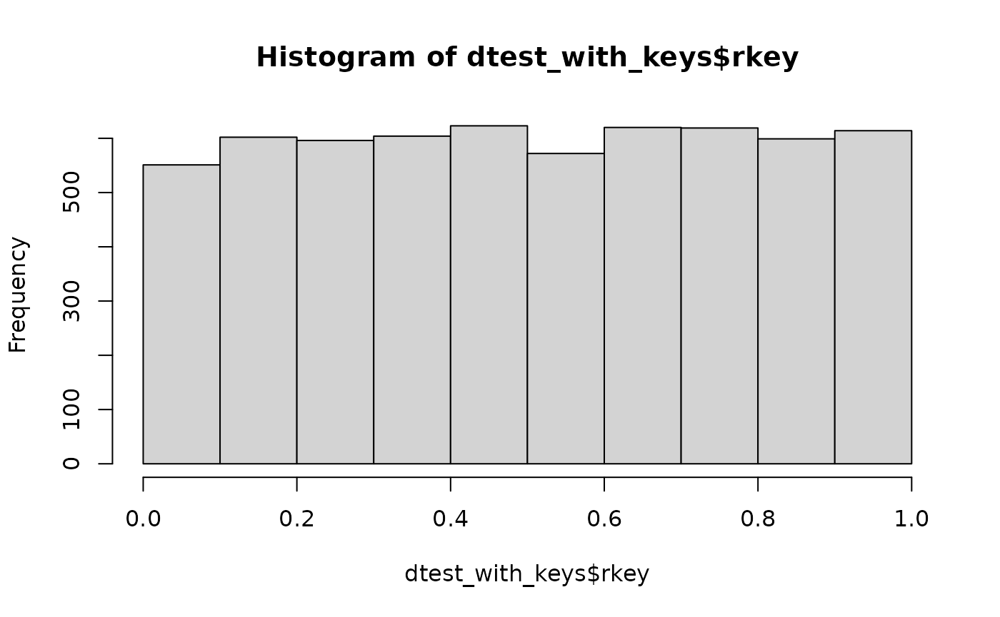

Quick Start: Applying the Cell Key Method
2025-10-21
Source:vignettes/quickstart-ckm.Rmd
quickstart-ckm.RmdThe package provides a sample dataset for practice:
data("dtest", package = "ckm")Step 1: Add Individual Keys
The function build_individual_keys() adds a column
rkey to your dataset, containing individual keys drawn from
a uniform distribution between 0 and 1.
set.seed(451919)
dtest_with_keys <- build_individual_keys(dtest)You can check that the distribution of individual keys is uniform:
hist(dtest_with_keys$rkey)
Apply the Cell Key Method in One Step
After generating the individual key, you can directly build the perturbed table.
The code below will:
- Build an aggregated table crossing the variables
"DEP", "DIPLOME", "SEXE", "AGE", including margins. - Compute the perturbation table according to parameters
D(maximum deviation) andV(variance of the distribution). - Apply the perturbation to the aggregated table.
res_ckm <- tabulate_and_apply_ckm(
df = dtest_with_keys,
cat_vars = c("DEP", "DIPLOME", "SEXE", "AGE"),
D = 5, V = 2
)The result is a list with four elements. The first element is the perturbed table, the second is the transition matrix, the third is the risk and utility measures, and the fourth is the original table. You can check the structure of the perturbed table:
str(res_ckm$tab)
#> tibble [3,847 × 6] (S3: tbl_df/tbl/data.frame)
#> $ DEP : chr [1:3847] "56" "79" "01" "2B" ...
#> $ DIPLOME : chr [1:3847] "N" "D" "N" "D" ...
#> $ SEXE : chr [1:3847] "F" "F" "G" "G" ...
#> $ AGE : chr [1:3847] "[50,120]" "[50,120]" "[0,26)" "[0,26)" ...
#> $ nb_obs : int [1:3847] 1 1 1 1 1 1 1 1 1 1 ...
#> $ nb_obs_ckm: num [1:3847] 0 0 0 0 0 0 0 0 0 0 ...Apply the Cell Key Method Step by Step
Step 1 Generate the Counting Table with Cell Keys
The next step is to build your counting table. You need to provide the dataset with the individual keys and the categorical variables you want to cross.
The function tabulate_cnt_micro_data builds all possible
cross-tabulations (including margins) and provides both the counts and
the cell key (the decimal part of the sum of individual keys).
tab_before <- tabulate_cnt_micro_data(
df = dtest_with_keys,
cat_vars = c("DEP", "DIPLOME", "SEXE", "AGE")
)The marge_label argument lets you set the margin label
(default is "Total"), and the hrc_vars
argument allows you to specify a hierarchy between variables if
needed.
Step 2 Apply the Perturbation
The next step is to apply the perturbation to the previous table. You need to specify at least:
- The table to perturb
- The two main CKM parameters:
- Maximum deviation
D(e.g.,D=5means data are perturbed by an integer between-5and+5) - Variance
Vof the probability distribution. The higher the variance, the greater the overall perturbation (e.g., measured by the mean absolute deviation).
- Maximum deviation
res_ckm <- apply_ckm(tab_before, D = 5, V = 2)
str(res_ckm$tab)
#> tibble [3,847 × 6] (S3: tbl_df/tbl/data.frame)
#> $ DEP : chr [1:3847] "56" "79" "01" "2B" ...
#> $ DIPLOME : chr [1:3847] "N" "D" "N" "D" ...
#> $ SEXE : chr [1:3847] "F" "F" "G" "G" ...
#> $ AGE : chr [1:3847] "[50,120]" "[50,120]" "[0,26)" "[0,26)" ...
#> $ nb_obs : int [1:3847] 1 1 1 1 1 1 1 1 1 1 ...
#> $ nb_obs_ckm: num [1:3847] 0 0 0 0 0 0 0 0 0 0 ...